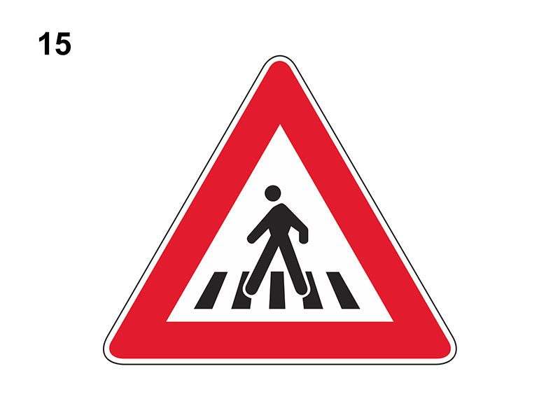

Attraversameto pedonale

E' un segnale di pericolo che preannuncia (di norma a 150 metri) un attraversamento pedonale (sia dentro che fuori i centri abitati).
In presenza del segnale:
Qualora non si dia la precedenza ai pedoni che attraversano sulle apposite strisce, si incorre nella sottrazione di punti della patente.
Non è vero che è posto in corrispondenza di un attraversamento pedonale, ma come detto 150 metri prima.
In presenza del segnale:
- bisogna rallentare per essere pronti ad arrestarsi se ci sono pedoni che attraversano la carreggiata
- il conducente deve dare la precedenza ai pedoni che attraversano sulle strisce
- non è consentito sorpassare i veicoli che rallentano o si fermano per far attraversare i pedoni e si deve fare attenzione a non tamponarli
- non si deve effettuare sosta o fermata sopra le strisce pedonali
Qualora non si dia la precedenza ai pedoni che attraversano sulle apposite strisce, si incorre nella sottrazione di punti della patente.
Non è vero che è posto in corrispondenza di un attraversamento pedonale, ma come detto 150 metri prima.